Union-Find ואלגוריתם Kruskal
⏱ זמן משוער: 55 דק'
0. האינטואיציה — למה בכלל צריך Union-Find?
באלגוריתם Kruskal אנחנו בונים עץ פורש מינימלי (עפ"מ) בדרך חמדנית: עוברים על הקשתות מהקלה לכבדה, ומוסיפים כל קשת — אלא אם היא סוגרת מעגל. כדי לבצע את הבדיקה הזו במהירות, נדרש מבנה נתונים שיודע לענות על שאלה אחת חוזרת ונשנית: "האם שני הקצוות של הקשת כבר שייכים לאותו רכיב קשיר?"
מבנה הנתונים שעונה בדיוק על השאלה הזו הוא Union-Find (נקרא גם Disjoint-Set Forest — יער קבוצות זרות). הרעיון: כל רכיב קשיר נשמר כעץ מושרש, והשורש הוא ה"שם" (הנציג) של הקבוצה. שני צמתים באותה קבוצה אם ורק אם הם מגיעים לאותו שורש.
מקור: union-find-mst-kruskal.pdf (עמ' 1)
1. ההגדרות — פעולות, שדות ושתי היוריסטיקות
1.1 הפעולות
שלוש הפעולות מוגדרות בשקף כך (במקור באנגלית):
- Make-Set(x) — Creates a disjoint set with x as its only member. יוצר קבוצה זרה ש-x הוא האיבר היחיד בה.
- Find-Set(x) — Returns the name of the set to which x belongs. מחזיר את שם הקבוצה ש-x שייך אליה — כלומר הנציג/השורש.
- Union(x,y) — Unites the disjoint sets to which x and y belong to a single set. מאחד את שתי הקבוצות הזרות לקבוצה אחת.
1.2 שדות המבנה
כל צומת x מחזיק שני שדות:
- p[x] — ה-parent (מצביע האב ביער). השורש מזוהה על-ידי התנאי x = p[x] (מצביע על עצמו — self-loop).
- rank[x] — ה-דרגה, שהיא חסם עליון על גובה הצומת ביער.
1.3 שתי היוריסטיקות השיפור
המבנה הבסיסי עלול "להתנוון" לעץ ארוך כמו רשימה מקושרת. שתי היוריסטיקות שומרות אותו רדוד:
השילוב של שתי ההיוריסטיקות הוא מה שנותן את הסיבוכיות האמורטייזד המפורסמת של Union-Find, שנראה בהמשך.
מקור: union-find-mst-kruskal.pdf (עמ' 1)
2. הפסאודו-קוד המלא — שורה אחר שורה
זהו הפסאודו-קוד המלא של ארבע הפעולות כפי שמופיע בשקף (מילה במילה מהמקור). שימו לב ש-Union לא מבצע דבר בעצמו — הוא מאתר את שני השורשים וקורא ל-Link, שמקבל שני שורשים ומיישם את union by rank.
Make-Set(x) 1. p[x] ← x 2. rank[x] ← 0 Union(x,y) 1. Link(Find-Set(x), Find-Set(y)) Find-Set(x) 1. If x ≠ p[x] 2. then p[x] ← Find-Set(p[x]) 3. return p[x] Link(x,y) 1. If rank[x] > rank[y] 2. then p[y] ← x 3. else p[x] ← y 4. if rank[x] = rank[y] 5. then rank[y] ← rank[y]+1
הסבר שורה-אחר-שורה
- Make-Set(x): מאתחל את x כשורש של עצמו (p[x]←x) ואת דרגתו ל-0.
- Union(x,y): מוצא את שורשי שתי הקבוצות בעזרת Find-Set, ומקשר ביניהם דרך Link.
- Find-Set(x): מיישם path compression. אם x אינו השורש (x ≠ p[x]), קורא לעצמו רקורסיבית על האב ומעדכן את p[x] להצביע ישירות על השורש שהוחזר; לבסוף מחזיר את השורש. כך כל צומת שבמסלול "נתלה" מחדש ישירות תחת השורש.
- Link(x,y) (מקבל שני שורשים): מיישם union by rank. אם rank[x] > rank[y] — y נתלה תחת x (p[y]←x). אחרת — x נתלה תחת y (p[x]←y), ורק אם הדרגות היו שוות (rank[x]=rank[y]) מגדילים את rank[y] ב-1.
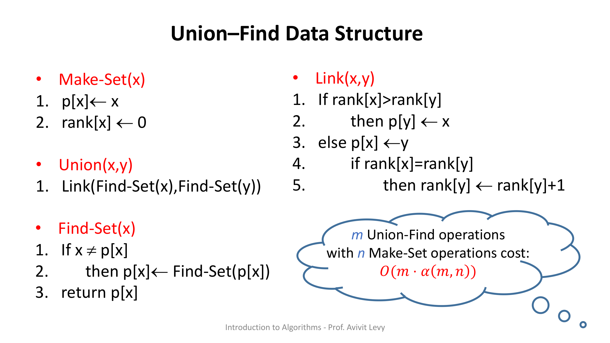
מקור: union-find-mst-kruskal.pdf (עמ' 2)
3. הדגמת ההרצאה — בניית יער ה-Union-Find
ההרצאה בונה יער Union-Find צעד-אחר-צעד על 8 צמתים: X, Y, Z, W, R, S, T, V. ייצוג השקפים: כל צומת הוא עיגול; ריבוע לבן קטן משמאלו מציג את ה-rank; חץ = מצביע p אל האב; self-loop = שורש המצביע על עצמו.
3.1 מצב התחלתי — 8 קבוצות בודדות
בהתחלה מבצעים Make-Set לכל אחד מ-8 הצמתים. כל צומת הוא שורש של עצמו, עם rank = 0 ולולאה עצמית.
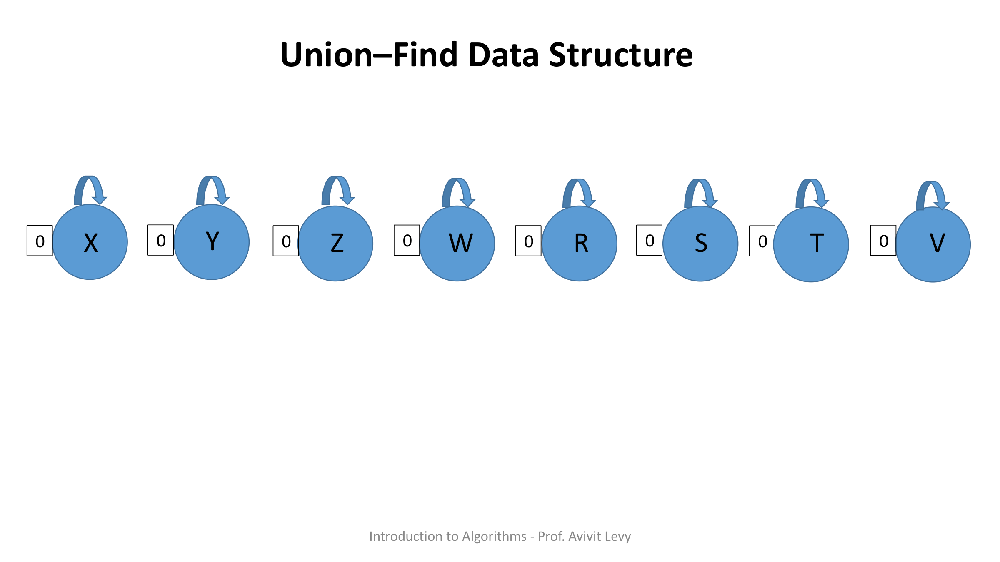
3.2 איחוד עצים בדרגות שוות — הדרגה עולה
לאחר סדרת Union נוצרים זוגות (למשל X→Y, Z→W, S→R, V→T), שבכל אחד הבן בדרגה 0 תלוי תחת שורש בדרגה 1. כשמאחדים שני עצים ששורשיהם באותה דרגה — לפי Link אחד נתלה תחת השני והדרגה של השורש שנשאר עולה ב-1. כאן, איחוד שני עצי דרגה 1 יוצר שורש חדש בדרגה 2.
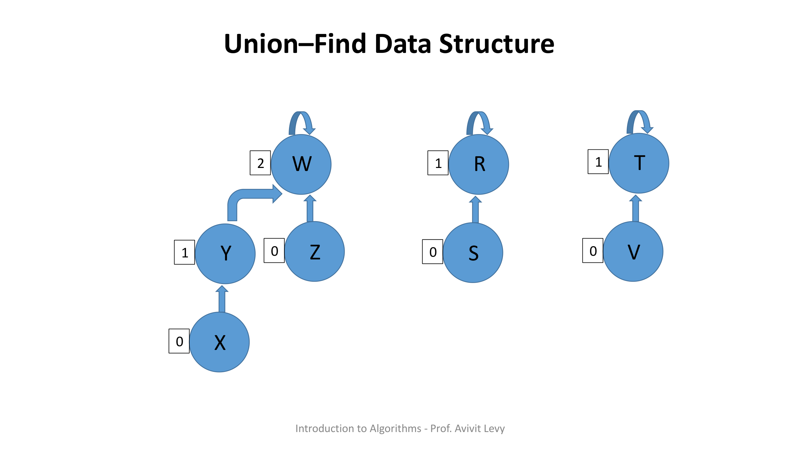
3.3 העץ המלא — W שורש בדרגה 3
בהמשך מאחדים את שני עצי הדרגה-2. שוב הדרגות שוות (2=2), ולכן דרגת השורש עולה ל-3. W נעשה שורש בדרגה 3, ומתקבל עץ יחיד בן 8 צמתים. שימו לב לשרשרת העמוקה S→R→T→W באורך 3.
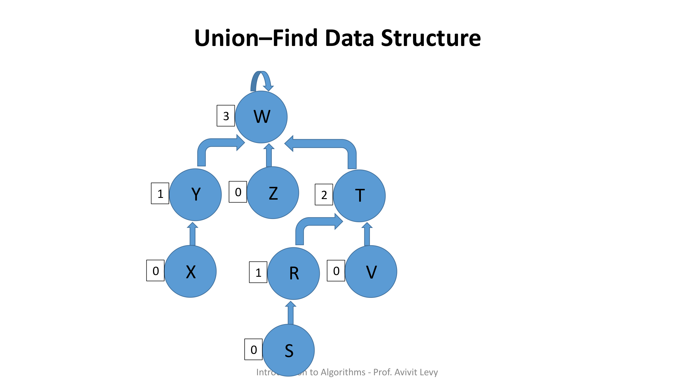
3.4 path compression — Find-Set(S) משטח את המסלול
עכשיו מבצעים Find-Set(S) על הצומת העמוק ביותר. המסלול לשורש הוא S→R→T→W. בזכות path compression, אחרי הקריאה כל צומת שבמסלול מצביע ישירות אל השורש W.
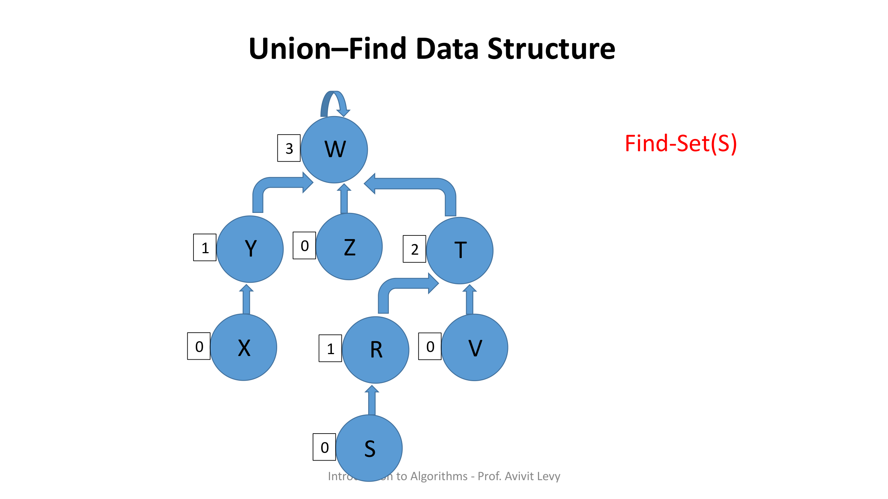
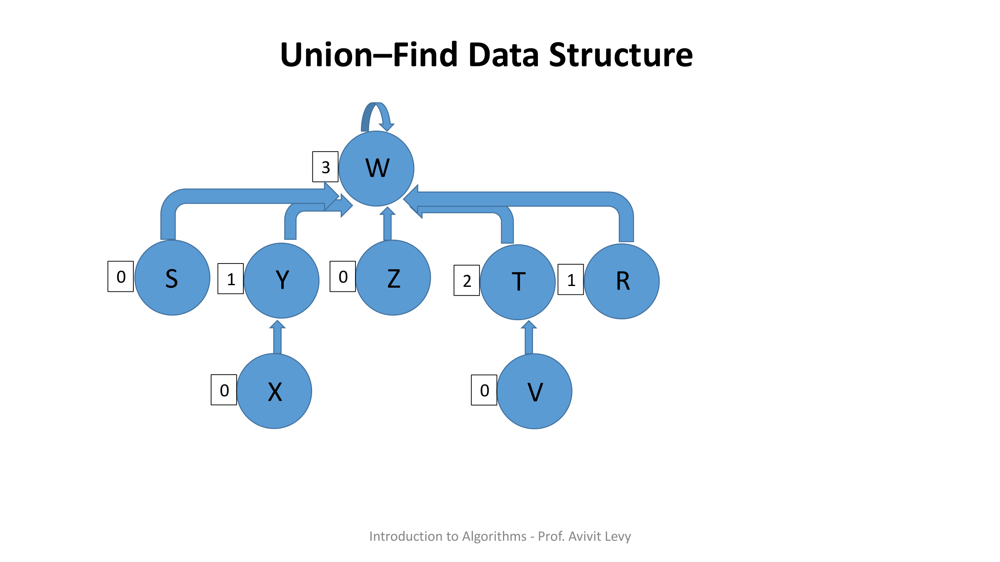
מקור: union-find-mst-kruskal.pdf (עמ' 3–10)
4. הוכחת הנכונות — למה העץ נשאר רדוד
ההוכחה מראה שדרגת כל צומת חסומה ב-log n, ולכן העומק של היער (עוד לפני path compression) חסום. הבסיס הוא Claim 1.
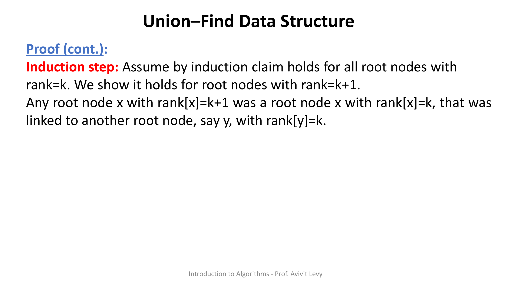
Induction step (מילה במילה מהמקור):
Assume by induction claim holds for all root nodes with rank=k. We show it holds for root nodes with rank=k+1. Any root node x with rank[x]=k+1 was a root node x with rank[x]=k, that was linked to another root node, say y, with rank[y]=k (because line 5 in the LINK procedure is the only pseudo-code line increasing the rank field and reached only in this scenario). Thus, x's set-size is the size of both x's and y's sets. By induction hypothesis x's and y's sets sizes are at least 2rank[x] and 2rank[y], that is: 2k. Thus, root node x's set-size after the LINK operation is at least:
2k + 2k = 2·2k = 2k+1, as required.
Conclusion (מילה במילה מהמקור):
The rank of any node x in the union-find forest is at most log n, where n is the number of initial MAKE-SET operations.
Proof. First observe that the greatest rank value is reached by a root node in the union-find forest. By claim 1, for any root node x the number of nodes in x's set is at least 2rank[x]. However, the total number of nodes is n. Therefore, 2rank[x] ≤ n. Thus, rank[x] ≤ log n.
🎓 הרחבה — לא נדרש למבחן: על α(m,n) עצמה
החסם האמורטייזד המלא O(m·α(m,n)) ניתן בשקפים כתוצאה בלבד (בענן), ללא הוכחה מלאה — ההוכחה של חסם ה-α היא מעבר לחומר שהוכח בכיתה. אינטואיציה: α היא ההופכית של פונקציית Ackermann שגדֵלה במהירות מפלצתית, ולכן ההופכית שלה מטפסת כה לאט עד ש-α(m,n) ≤ 4 לכל מספר צמתים שאפשר לאחסן ביקום. מעשית — קבוע.
מקור: union-find-mst-kruskal.pdf (עמ' 13–17)
5. אלגוריתם Kruskal ל-MST
עכשיו מרכיבים הכל יחד. Kruskal הוא אלגוריתם חמדני הבונה עץ פורש מינימלי כיער שגדל: מאתחלים כל צומת כקבוצה נפרדת, ממיינים את הקשתות לפי משקל בסדר עולה, ועוברים עליהן — כל קשת שקצוותיה בקבוצות שונות נבחרת (ומאחדים את הקבוצות), וכל קשת שקצוותיה כבר באותה קבוצה נדחית (כי היא סוגרת מעגל).
MST-Kruskal(G, w)
1. A ← ∅
2. for each vertex v ∈ V[G]
3. do Make-Set(v)
4. sort the edges of E into nondecreasing order by weight w
5. for each edge (u,v) ∈ E, taken in nondecreasing order by weight
6. do if Find-Set(u) ≠ Find-Set(v)
7. then A ← A ∪ {(u,v)}
8. Union(u,v)
9. return A
5.1 טבלת העלות (עמ' 18)
השקף האחרון הוא טבלת עלויות של Kruskal, שורה-שורה. הכותרת: "Finding Minimum Spanning Tree — Kruskal's Algorithm Cost".
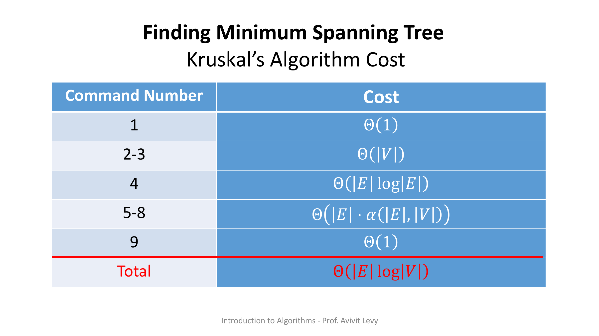
| שורה | מה מתבצע | עלות |
|---|---|---|
| 1 | אתחול A ← ∅ | Θ(1) |
| 2–3 | לולאת Make-Set על כל צומת | Θ(|V|) |
| 4 | מיון הקשתות לפי משקל | Θ(|E| log|E|) |
| 5–8 | מעבר על הקשתות עם Find-Set/Union | Θ(|E| · α(|E|,|V|)) |
| 9 | return A | Θ(1) |
| סה"כ | Total | Θ(|E| log|V|) |
🎓 הרחבה — לא נדרש למבחן: מתי אפשר לוותר על המיון?
אם משקלי הקשתות הם מספרים שלמים בתחום קטן [1..k], אפשר להחליף את מיון ההשוואות ב-counting sort בזמן Θ(|E|+k). אז שלב המיון מפסיק לשלוט, ועלות Kruskal יורדת לכיוון הכמעט-לינארי Θ(|E|·α). זו הרחבה מעבר לשקפים.
מקור: union-find-mst-kruskal.pdf (עמ' 18)
6. תרגיל הקורס — עץ פורש מינימלי
מבוא לאלגוריתמים — תרגיל בית – עץ פורש מינימלי. קבצים להורדה: שאלת התרגיל (hw-mst.pdf) · הפתרון המלא (sol-hw-mst.pdf).
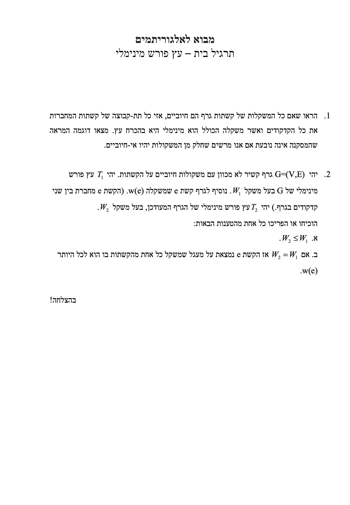
6.1 שאלה 1 (ניסוח מקורי)
הראו שאם כל המשקלות של קשתות גרף הם חיוביים, אזי כל תת-קבוצה של קשתות המחברות את כל הקדקודים ואשר משקלה הכולל הוא מינימלי היא בהכרח עץ. מצאו דוגמה המראה שהמסקנה אינה נובעת אם אנו מרשים שחלק מן המשקולות יהיו אי-חיוביים.
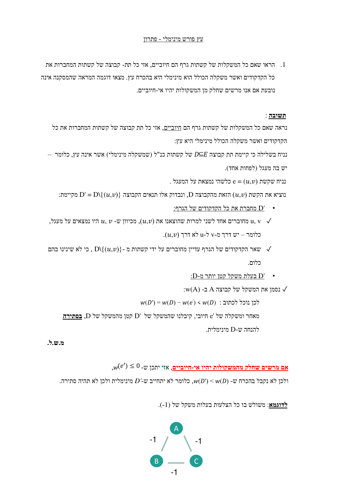
תשובה (מילה במילה מתוך sol-hw-mst.pdf):
נראה שאם כל המשקלות של קשתות גרף הם חיוביים, אזי כל תת קבוצה של קשתות המחברות את כל הקדקודים ואשר משקלה הכולל מינימלי היא עץ:
נניח בשלילה כי קיימת תת קבוצה D⊆E של קשתות כנ"ל (שמשקלה מינימלי) אשר אינה עץ, כלומר – יש בה מעגל (לפחות אחד).
נניח שקשת e = (u,v) כלשהי נמצאת על המעגל.
נוציא את הקשת (u,v) הזאת מהקבוצה D, ונבדוק אלו תנאים הקבוצה D' = D\{(u,v)} מקיימת:
• D' מחברת את כל הקדקודים של הגרף:
✓ u,v מחוברים אחד לשני למרות שהוצאנו את (u,v), מכיוון ש-u,v היו נמצאים על מעגל, כלומר – יש דרך מ-v ל-u לא דרך (u,v).
✓ שאר הקדקודים של הגרף עדיין מחוברים על ידי קשתות מ-D\{(u,v)}, כי לא שינינו בהם כלום.
• D' בעלת משקל קטן יותר מ-D:
✓ נסמן את המשקל של קבוצה A ב-w(A):
לכן נוכל לכתוב: w(D') = w(D) − w(e') < w(D)
מאחר ומשקלה של e' חיובי, קיבלנו שהמשקל של D' קטן מהמשקל של D, בסתירה להנחה ש-D מינימלית. מ.ש.ל.
אם מרשים שחלק מהמשקולות יהיו אי-חיוביים, אזי יתכן ש-w(e') ≤ 0, ולכן לא נקבל בהכרח ש-w(D') < w(D), כלומר לא יתחייב ש-D' מינימלית ולכן לא תהיה סתירה.
לדוגמא: משולש בו כל הצלעות בעלות משקל של (1-).
הסבר מודרך: הרעיון הוא מעגל = "עודף". אם קבוצת קשתות מחברת את כל הצמתים אבל יש בה מעגל, אפשר להוריד קשת אחת מהמעגל בלי לנתק אף צומת (יש דרך חלופית סביב המעגל). כשכל המשקלים חיוביים, ההורדה תמיד מקטינה משקל — סתירה למינימליות. לכן קבוצה מינימלית חייבת להיות חסרת מעגלים וקשירה, כלומר עץ. המפתח שנשבר עם משקל אי-חיובי: הורדת קשת במשקל ≤ 0 אינה מקטינה את המשקל, אז המעגל יכול "לשרוד" בקבוצה מינימלית (במשולש של −1, כל שלוש הקשתות יחד שוקלות −3, פחות מכל תת-עץ).
6.2 שאלה 2 (ניסוח מקורי)
יהי G=(V,E) גרף קשיר לא מכוון עם משקולות חיוביים על הקשתות. יהי T₁ עץ פורש מינימלי של G בעל משקל W₁. נוסיף לגרף קשת e שמשקלה w(e). (הקשת e מחברת בין שני קדקודים בגרף.) יהי T₂ עץ פורש מינימלי של הגרף המעודכן, בעל משקל W₂. הוכיחו או הפריכו כל אחת מהטענות הבאות:
א. W₂ ≤ W₁.
ב. אם W₂ = W₁ אז הקשת e נמצאת על מעגל שמשקל כל אחת מהקשתות בו הוא לכל היותר w(e).
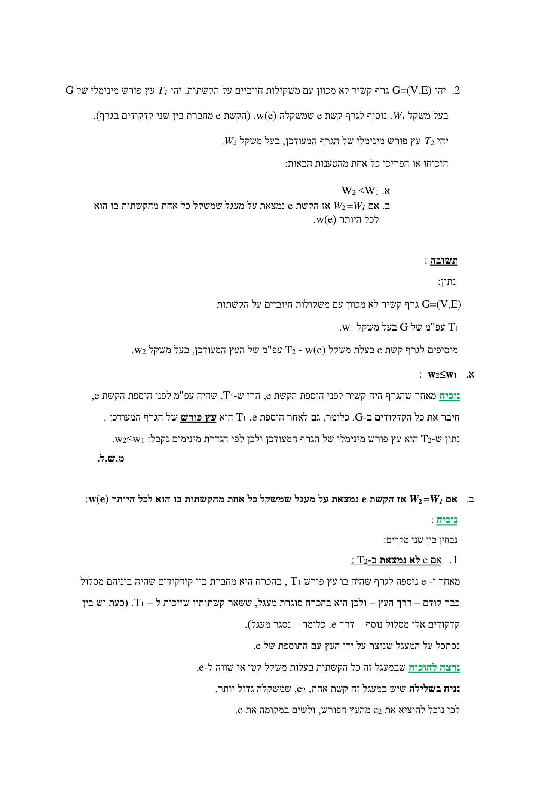
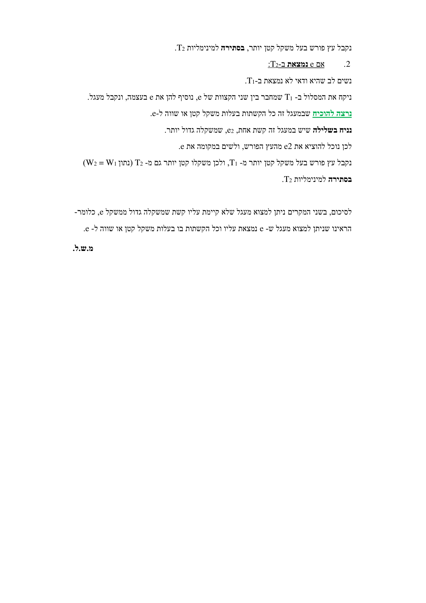
תשובה (מילה במילה מתוך sol-hw-mst.pdf):
א. w₂ ≤ w₁:
נוכיח: מאחר שהגרף היה קשיר לפני הוספת הקשת e, הרי ש-T₁, שהיה עפ"מ לפני הוספת הקשת e, חיבר את כל הקדקודים ב-G. כלומר, גם לאחר הוספת e, T₁ הוא עץ פורש של הגרף המעודכן. נתון ש-T₂ הוא עץ פורש מינימלי של הגרף המעודכן ולכן לפי הגדרת מינימום נקבל: w₂≤w₁. מ.ש.ל.
ב. אם W₂=W₁ אז e נמצאת על מעגל שכל קשתותיו במשקל ≤ w(e):
נוכיח: נבחין בין שני מקרים:
1. אם e לא נמצאת ב-T₂:
מאחר ו-e נוספה לגרף שהיה בו עץ פורש T₁, בהכרח היא מחברת בין קודקודים שהיה ביניהם מסלול כבר קודם – דרך העץ – ולכן היא בהכרח סוגרת מעגל, שכל קשתותיו שייכות ל-T₁. (כעת יש בין קדקודים אלו מסלול נוסף – דרך e. כלומר – נסגר מעגל). נסתכל על המעגל שנוצר על ידי העץ עם התוספת של e. נרצה להוכיח שבמעגל זה כל הקשתות בעלות משקל קטן או שווה ל-e. נניח בשלילה שיש במעגל זה קשת אחת, e₂, שמשקלה גדול יותר. לכן נוכל להוציא את e₂ מהעץ הפורש, ולשים במקומה את e. נקבל עץ פורש בעל משקל קטן יותר, בסתירה למינימליות T₂.
2. אם e נמצאת ב-T₂:
נשים לב שהיא ודאי לא נמצאת ב-T₁. ניקח את המסלול ב-T₁ שמחבר בין שני הקצוות של e, נוסיף להן את e בעצמה, ונקבל מעגל. נרצה להוכיח שבמעגל זה כל הקשתות בעלות משקל קטן או שווה ל-e. נניח בשלילה שיש במעגל זה קשת אחת, e₂, שמשקלה גדול יותר. לכן נוכל להוציא את e₂ מהעץ הפורש, ולשים במקומה את e. נקבל עץ פורש בעל משקל קטן יותר מ-T₁, ולכן משקלו קטן יותר גם מ-T₂ (נתון W₂ = W₁) בסתירה למינימליות T₂.
לסיכום, בשני המקרים ניתן למצוא מעגל שלא קיימת עליו קשת שמשקלה גדול ממשקל e, כלומר- הראינו שניתן למצוא מעגל ש-e נמצאת עליו וכל הקשתות בו בעלות משקל קטן או שווה ל-e. מ.ש.ל.
הסבר מודרך: שני הסעיפים נשענים על אותו כלי — טיעון החלפה. בסעיף א' מספיק לשים לב ש-T₁ נשאר עץ פורש חוקי גם אחרי הוספת קשת (לא איבדנו קשירות), ולכן העפ"מ החדש לא יכול להיות כבד יותר ממנו. בסעיף ב', אם היה במעגל קשת e₂ כבדה מ-e, היינו "מחליפים" את e₂ ב-e ומקבלים עץ קל יותר — בסתירה לכך ש-T₂ מינימלי. זהו בדיוק העיקרון שמאחורי נכונות Kruskal: קשת נדחית רק אם היא סוגרת מעגל שכל קשתותיו כבר קלות ממנה או שוות לה.
מקור: hw-mst.pdf (עמ' 1), sol-hw-mst.pdf (עמ' 1–3)
7. תרגיל הקורס — עפ"מ, פרים וקרושקל
תרגיל בית– עץ פורש מינימלי, פרים וקרושקל. קבצים להורדה: שאלת התרגיל (hw-mst-prim-kruskal.pdf) · הפתרון המלא (sol-hw-mst-prim-kruskal.pdf).
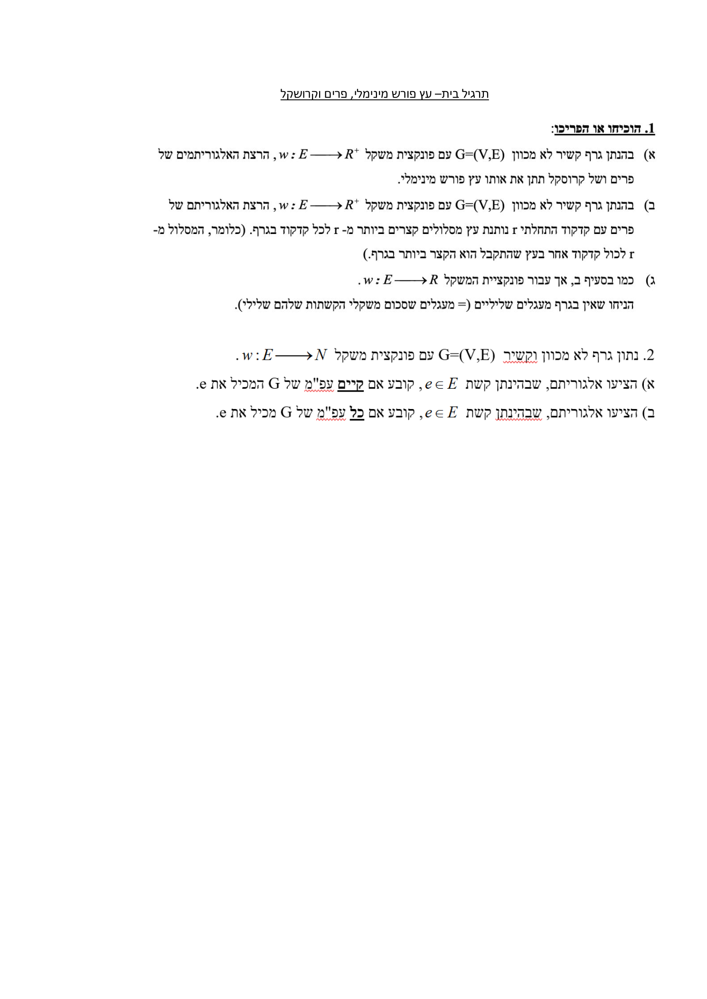
7.1 שאלה 1 (ניסוח מקורי)
1. הוכיחו או הפריכו:
א) בהנתן גרף קשיר לא מכוון G=(V,E) עם פונקצית משקל w:E⟶R⁺, הרצת האלגוריתמים של פרים ושל קרוסקל תתן את אותו עץ פורש מינימלי.
ב) בהנתן גרף קשיר לא מכוון G=(V,E) עם פונקצית משקל w:E⟶R⁺, הרצת האלגוריתם של פרים עם קדקוד התחלתי r נותנת עץ מסלולים קצרים ביותר מ-r לכל קדקוד בגרף. (כלומר, המסלול מ-r לכול קדקוד אחר בעץ שהתקבל הוא הקצר ביותר בגרף.)
ג) כמו בסעיף ב, אך עבור פונקציית המשקל w:E⟶R. הניחו שאין בגרף מעגלים שליליים (= מעגלים שסכום משקלי הקשתות שלהם שלילי).
7.2 שאלה 2 (ניסוח מקורי)
2. נתון גרף לא מכוון וקשיר G=(V,E) עם פונקצית משקל w:E⟶N.
א) הציעו אלגוריתם, שבהינתן קשת e∈E, קובע אם קיים עפ"מ של G המכיל את e.
ב) הציעו אלגוריתם, שבהינתן קשת e∈E, קובע אם כל עפ"מ של G מכיל את e.
תשובה (מילה במילה מתוך sol-hw-mst-prim-kruskal.pdf):
1.א. לא נכון.
נריץ את האלגוריתם של פרים על הגרף הבא ונקבל את העפ"מ הבא. ייבחרו הקשתות לפי הסדר הבא: (A, B), (B, C), (C, D), (E, D).
נריץ את האלגוריתם של קרושקל על אותו הגרף ונקבל את העפ"מ הבא. ייבחרו הקשתות לפי הסדר הבא: (E, D), (C, D), (A, B), (A, E).
1.ב. לא נכון.
ניתן כדוגמה את הגרף הבא: נראה כי המסלול הקצר ביותר מקדקוד A לקדקוד C לא עובר בתוך העץ שנוצר מהרצת פרים.
1.ג. לא נכון. נשתמש באותה דוגמה מ-1.ב - ניתן להגיד כי R⁺⊂R ולכן לא לכל עץ מ-R ניתן להניח את ההנחה (לדוגמה, העץ מסעיף 1.ב).
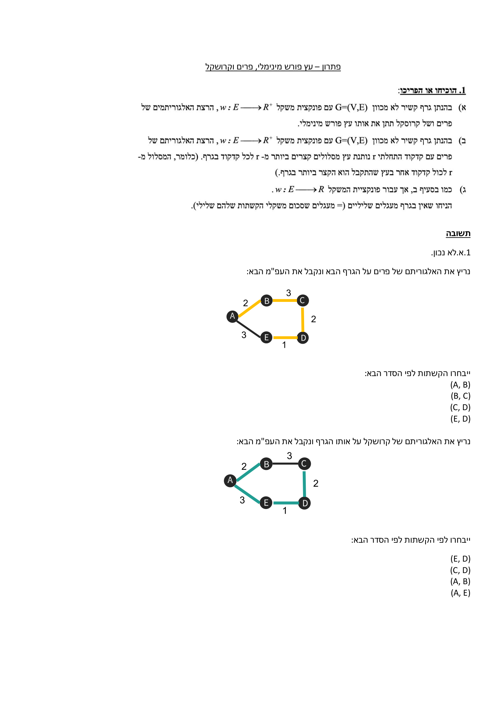
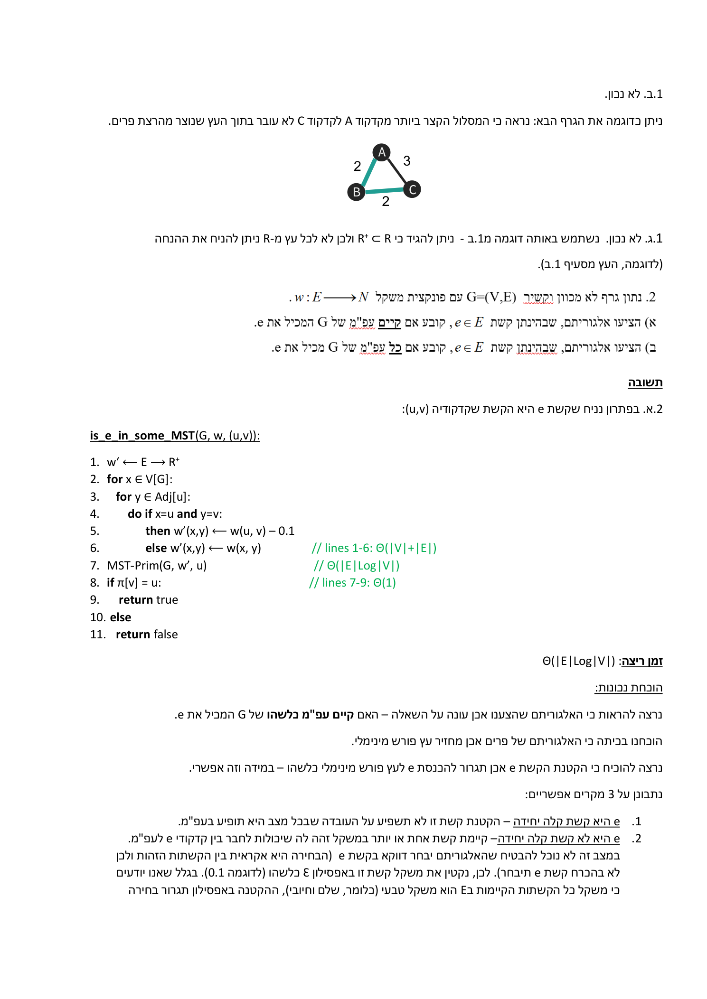
הסבר מודרך: הדוגמה הנגדית לסעיף א' מנצלת תיקו במשקלים — שתי הקשתות B-C ו-A-E שתיהן במשקל 3. משקל שני העצים זהה (8), אך העצים עצמם שונים: פרים בוחר B-C ולא A-E, וקרושקל בוחר A-E ולא B-C. כלומר עפ"מ אינו יחיד כשיש תיקו, ושני אלגוריתמים חמדניים שוברים אותו אחרת. סעיף ב' מזכיר שעפ"מ ≠ עץ מסלולים קצרים: עפ"מ ממזער את המשקל הכולל, לא את המרחק מקדקוד שורש יחיד.
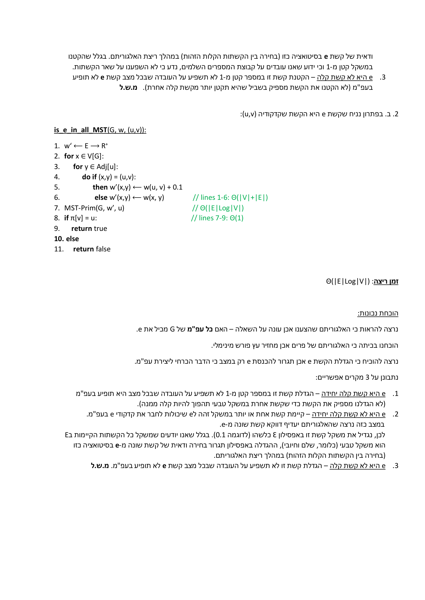
2.א — is_e_in_some_MST (מילה במילה מהמקור):
is_e_in_some_MST(G, w, (u,v)): 1. w' ⟵ E → R⁺ 2. for x ∈ V[G]: 3. for y ∈ Adj[u]: 4. do if x=u and y=v: 5. then w'(x,y) ⟵ w(u, v) − 0.1 6. else w'(x,y) ⟵ w(x, y) // lines 1-6: Θ(|V|+|E|) 7. MST-Prim(G, w', u) // Θ(|E|Log|V|) 8. if π[v] = u: // lines 7-9: Θ(1) 9. return true 10. else 11. return false
זמן ריצה: Θ(|E|Log|V|)
הוכחת נכונות (מילה במילה מהמקור): נרצה להראות כי האלגוריתם שהצענו אכן עונה על השאלה – האם קיים עפ"מ כלשהו של G המכיל את e. הוכחנו בכיתה כי האלגוריתם של פרים אכן מחזיר עץ פורש מינימלי. נרצה להוכיח כי הקטנת הקשת e אכן תגרור להכנסת e לעץ פורש מינימלי כלשהו – במידה וזה אפשרי. נתבונן על 3 מקרים אפשריים:
1. e היא קשת קלה יחידה – הקטנת קשת זו לא תשפיע על העובדה שבכל מצב היא תופיע בעפ"מ.
2. e היא לא קשת קלה יחידה – קיימת קשת אחת או יותר במשקל זהה לה שיכולות לחבר בין קדקודי e לעפ"מ. במצב זה לא נוכל להבטיח שהאלגוריתם יבחר דווקא בקשת e (הבחירה היא אקראית בין הקשתות הזהות ולכן לא בהכרח קשת e תיבחר). לכן, נקטין את משקל קשת זו באפסילון ε כלשהו (לדוגמה 0.1). בגלל שאנו יודעים כי משקל כל הקשתות הקיימות ב-E הוא משקל טבעי (כלומר, שלם וחיובי), ההקטנה באפסילון תגרור בחירה ודאית של קשת e בסיטואציה כזו (בחירה בין הקשתות הקלות הזהות) במהלך ריצת האלגוריתם. בגלל שהקטנו במשקל קטן מ-1 וכי ידוע שאנו עובדים על קבוצת המספרים השלמים, נדע כי לא השפענו על שאר הקשתות.
3. e היא לא קשת קלה – הקטנת קשת זו במספר קטן מ-1 לא תשפיע על מצב שבכל תקן יותר מקשת קלה אחרת. (לא הקטנו את הקשת מספיק בשביל שהיא תקטן יותר מקשת קלה אחרת). מ.ש.ל.
2.ב — is_e_in_all_MST (מילה במילה מהמקור):
is_e_in_all_MST(G, w, (u,v)): 1. w' ⟵ E → R⁺ 2. for x ∈ V[G]: 3. for y ∈ Adj[u]: 4. do if (x,y) = (u,v): 5. then w'(x,y) ⟵ w(u, v) + 0.1 6. else w'(x,y) ⟵ w(x, y) // lines 1-6: Θ(|V|+|E|) 7. MST-Prim(G, w', u) // Θ(|E|Log|V|) 8. if π[v] = u: // lines 7-9: Θ(1) 9. return true 10. else 11. return false
זמן ריצה: Θ(|E|Log|V|)
הוכחת נכונות (מילה במילה מהמקור): נרצה להראות כי האלגוריתם שהצענו אכן עונה על השאלה – האם כל עפ"מ של G מכיל את e. הוכחנו בכיתה כי האלגוריתם של פרים אכן מחזיר עץ פורש מינימלי. נרצה להוכיח כי הגדלת הקשת e אכן תגרור להכנסת e רק במצב בו הדבר הכרחי ליצירת עפ"מ. נתבונן על 3 מקרים אפשריים:
1. e היא קשת קלה יחידה – הגדלת קשת זו במספר קטן מ-1 לא תשפיע על העובדה שבכל מצב היא תופיע בעפ"מ (לא הגדלנו מספיק את הקשת כדי שקשת אחרת במשקל טבעי תהפוך להיות קלה ממנה).
2. e היא לא קשת קלה יחידה – קיימת קשת אחת או יותר במשקל זהה לe שיכולות לחבר את קדקודי e בעפ"מ. במצב כזה נרצה שהאלגוריתם יעדיף דווקא קשת שונה מ-e. לכן, נגדיל את משקל קשת זו באפסילון ε כלשהו (לדוגמה 0.1). בגלל שאנו יודעים שמשקל כל הקשתות הקיימות ב-E הוא משקל טבעי (כלומר, שלם וחיובי), ההגדלה באפסילון תגרור בחירה ודאית של קשת שונה מ-e בסיטואציה כזו (בחירה בין הקשתות הקלות הזהות) במהלך ריצת האלגוריתם.
3. e היא לא קשת קלה – הגדלת קשת זו לא תשפיע על העובדה שבכל מצב קשת e לא תופיע בעפ"מ. מ.ש.ל.
הסבר מודרך: שני הפתרונות משתמשים באותו טריק ε=0.1. מכיוון שכל המשקלים הם מספרים טבעיים (שלמים), שינוי של פחות מ-1 לא הופך אף קשת לקלה או כבדה מקשת אחרת — הוא רק שובר תיקו. ב-2.א מקטינים את e כדי לכפות על פרים לבחור בה (אם היא שווה לקשת קלה אחרת); אם e נכנסה — סימן שקיים עפ"מ המכיל אותה. ב-2.ב מגדילים את e כדי להעדיף קשת אחרת; אם למרות ההגדלה e עדיין נכנסת — סימן שהיא הכרחית ולכן נמצאת בכל עפ"מ. הבדיקה π[v]=u בסוף פשוט שואלת אם e היא קשת בעץ שפרים החזיר.
מקור: hw-mst-prim-kruskal.pdf (עמ' 1), sol-hw-mst-prim-kruskal.pdf (עמ' 1–3)
8. סרטון סיכום — הכל יחד
מקור: union-find-mst-kruskal.pdf (סיכום עמ' 1–18)
9. בדיקה עצמית
בהדגמת ההרצאה, לאחר Find-Set(S) עם path compression על היער בן 8 הצמתים, מה קורה לשדות ה-rank של הצמתים שבמסלול S→R→T→W?
קוראים ל-Link(x,y) על שני שורשים כאשר rank[x]=2 ו-rank[y]=3. מה תהיה דרגת השורש של העץ המאוחד?
בטבלת העלות שורה 4 (מיון) היא Θ(|E| log|E|), אך הסה"כ נכתב Θ(|E| log|V|). מה מצדיק את המעבר הזה?
לפי Claim 1, אם x הוא שורש בעל rank[x]=k, כמה צמתים לפחות נמצאים בקבוצה שלו?
בדוגמה הנגדית מהתרגיל (סעיף 1.א), פרים וקרושקל מחזירים עצים פורשים שונים על אותו גרף, אך בעלי אותו משקל כולל. מה הסיבה?